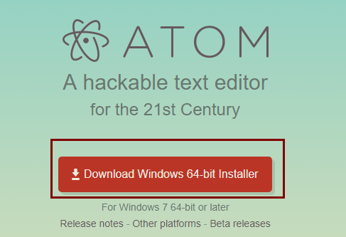
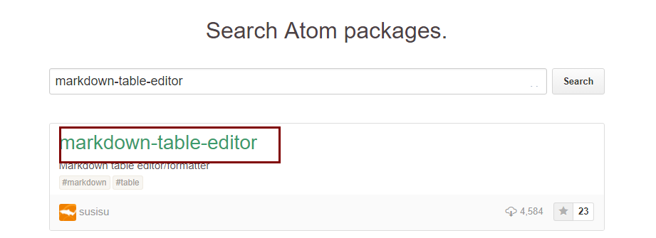
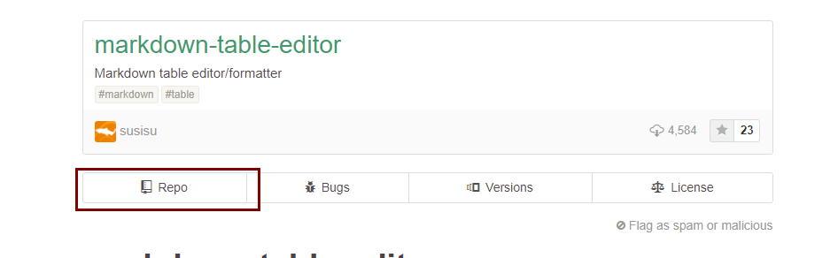
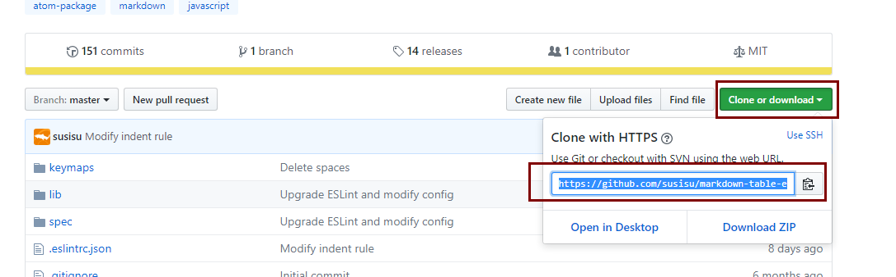
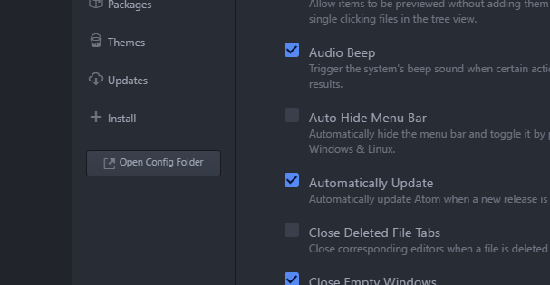

atom的安装和使用 {ignore = true}
前言
Atom 是github专门为程序员推出的一个跨平台文本编辑器。具有简洁和直观的图形用户界面，并有很多有趣的特点：支持CSS，HTML，JavaScript等网页编程语言。它支持宏，自动完成分屏功能，集成了文件管理器。
安装
安装环境
- windows 10 64 位
- 系统已经装好了git工具
- 系统已经装好了node
系统已经装好了cnpm
安装步骤
安装Atom
在ATOM的官网下载安装包,按点击安装文件。

安装packages方法
在ATOM官网(https://atom.io/packages)上查找希望安装的包，如：markdown-table-editor,点击对应插件:
 
如下图找到github上插件对应地址，复制该地址，备用。

打开atom,快捷键
ctrl-,,点击Open Config Folder
右键盘packages -> Show in Explorer

- 进入packages文件夹，打开git 命令行工具
- 输入命令
git clone https://github.com/susisu/markdown-table-editor.git cd markdown-table-editor cnpm install - 重启atom 安装成功
安装以下packages
我们安装的常用packages如下：
| 包名 | 下载地址 |
|---|---|
| markdown-table-editor | https://github.com/susisu/markdown-table-editor.git |
| atom-pandoc-convert | https://github.com/josa42/atom-pandoc-convert.git |
| markdown-img-paste | https://github.com/cocoakekeyu/markdown-img-paste.git |
| markdown-preview-enhanced | https://github.com/shd101wyy/markdown-preview-enhanced.git |
快捷键
| 命令 | 作用 |
|---|---|
| contrl-shift+p | 命令列表 |
| contrl-, | IDE设置 |